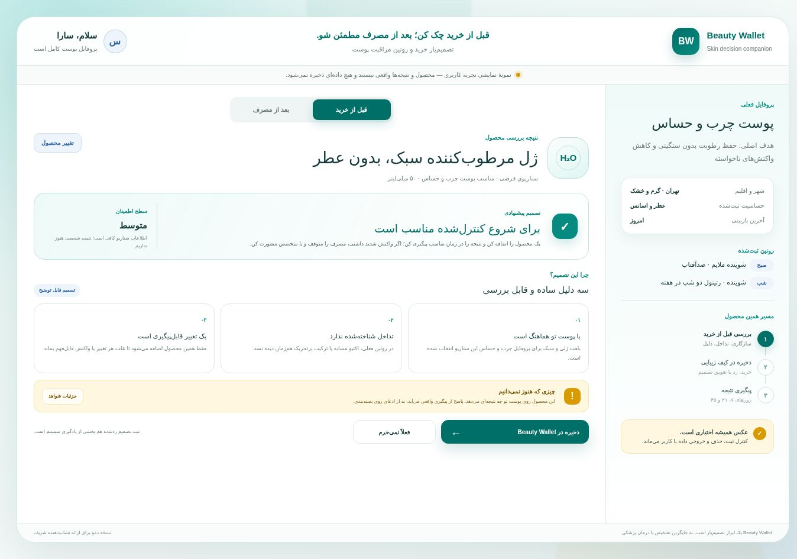

حافظهٔ قابلممیزی از SKU، نسخهٔ فرمول و نتیجهٔ واقعی مصرف تو ندارد.
پایلوت تصمیم خرید · ۵ محصول آغازین + کاتالوگ ۱۵تایی
خرید بعدی را با روتین واقعی خودت بسنج
خانومی، قبل از خرید محصول بعدی،
ببین واقعاً با پوست و روتین تو جور هست یا نه.
خانومی، اسم محصول را بگو؛ نسخهٔ بازار ایران، روتین فعلی، تجربههای قبلی، بودجه و شرایط شهرت را کنار هم میگذاریم. اگر جواب «اطلاعات کافی نیست» باشد، دقیق میبینی کمبود از دیتای محصول است یا از چیزهایی که هنوز ثبت نکردهای.
عکس مرجع اختیاری است و فقط برای مقایسهٔ روند استفاده میشود؛ نه برای تشخیص پوست.
✓ فروشندهٔ محصول نیستیم
✓ حافظهٔ روتین روی همین دستگاه میماند
✓ کمبود دیتاست و کمبود پروفایل جدا نشان داده میشود
BW
قبل از خرید
بررسی شخصی محصول

✓
نمونهٔ نوع خروجی
برای شروع کنترلشده قابل بررسی است
همراه دلیل، سطح اطمینان و نکات گمشده
۲۱
پیگیری بعد از مصرف
اثر، واکنش و ارزش خرید
Beauty Wallet دقیقاً چه چیزی را بررسی میکند؟
هماهنگی با حالِ امروز پوستت
تداخل با روتین فعلی
تجربههای قبلی تو
بودجه و اصالت
کیفیت داده و سطح اطمینان
خب فرقش با GPT یا داروخانه چیه؟
جواب کوتاه و بیحاشیهبرای خرید و سؤال فوری خوب است؛ ولی معمولاً روتین چندماههات را بین فروشگاهها دنبال نمیکند.
نمیفروشد؛ پاسپورت محصول ایران، روتین شخصی و نتیجهٔ مصرف را به یک تصمیم قابلپیگیری وصل میکند.
برای علائم شدید، بیماری پوستی، بارداری/شیردهی یا درمان فعال، مسیر درست همچنان داروساز یا پزشک است؛ اینجا قرار نیست آن نقش را بازی کنیم.
۱
من را واقعاً بشناس
پروفایل پوست، روتین و ترجیحات من
اطلاعات ضروری را حالا ثبت کن؛ بقیه بخشها هر زمان قابل تکمیل و ویرایشاند.
۲
برای من ارزش خرید دارد؟
بررسی محصول قبل از خرید
بررسیهای دقیق پشت صحنه انجام میشوند؛ تو یک جواب روشن، شخصی و قابلفهم میبینی.
H₂O
آماده بررسی
اطلاعات محصول و هدف خودت را مرحلهبهمرحله وارد کن.
۳
یک دوره مصرف قابلپیگیری
شروع مصرف و ثبت خط پایه
محصول دریافتی، برنامه مصرف و وضعیت پایه جداگانه ثبت میشوند.
۴
اثر، تحمل و ارزش خرید
محصول واقعاً برای تو چطور بوده؟
نتیجه، واکنش، تجربه مصرف و پایبندی جداگانه ثبت میشوند.
۵
حافظه شخصی و قابلکنترل
Beauty Wallet من
تاریخچه تصمیم، خرید، مصرف و نتیجه؛ مستقل از فروشگاه.شناسه ثابت کیف
BW-••••-••••
این شناسه مسیر شخصی تو را به تصمیمها، عکسهای مرجع، دورههای مصرف و نتیجهها متصل میکند.مسیر محصولات من
دورههای مصرف و نتیجه
خط زمانی تصویری
عکسهای مرجع و نتیجه
هنوز عکس نتیجهای به یک دوره متصل نشده است.
کمک به روتین بر پایه داده خودت
گام بعدی پیشنهادی
وقتی عکس شروع، میزان استفاده و حس پوستت را ثبت کنی، گام بعدی روتین با تکیه بر دادههای خودت نمایش داده میشود.
ماندگاری روتین
خانومی، امروز روتینت انجام شد؟
یک ثبت دهثانیهای کمک میکند بفهمیم محصول واقعاً جواب داده یا فقط چند روز خوب پیش رفته.
کنترل اطلاعات
اطلاعات، عکسهای مرجع و عکسهای نتیجه نسخه آزمایشی فقط در مرورگر همین دستگاه ذخیره میشوند. اشتراکگذاری فقط با انتخاب و اقدام صریح تو انجام میشود.